<!-- saved from url=(0045)http://www.casacarmelguatemala.com/tours.html -->
<html><head><meta http-equiv="Content-Type" content="text/html; charset=ISO-8859-1">
<title>::: CASA CARMEL - CENTRO HISTORICO, CIUDAD DE GUATEMALA :::</title>

<style type="text/css">
<!--
body {
	background-image: url();
	background-color: #DAC3A4;
}
-->
</style>
<script src="./tours_files/AC_RunActiveContent.js" type="text/javascript"></script>
<script type="text/javascript">
<!--
function MM_swapImgRestore() { //v3.0
  var i,x,a=document.MM_sr; for(i=0;a&&i<a.length&&(x=a[i])&&x.oSrc;i++) x.src=x.oSrc;
}
function MM_preloadImages() { //v3.0
  var d=document; if(d.images){ if(!d.MM_p) d.MM_p=new Array();
    var i,j=d.MM_p.length,a=MM_preloadImages.arguments; for(i=0; i<a.length; i++)
    if (a[i].indexOf("#")!=0){ d.MM_p[j]=new Image; d.MM_p[j++].src=a[i];}}
}

function MM_findObj(n, d) { //v4.01
  var p,i,x;  if(!d) d=document; if((p=n.indexOf("?"))>0&&parent.frames.length) {
    d=parent.frames[n.substring(p+1)].document; n=n.substring(0,p);}
  if(!(x=d[n])&&d.all) x=d.all[n]; for (i=0;!x&&i<d.forms.length;i++) x=d.forms[i][n];
  for(i=0;!x&&d.layers&&i<d.layers.length;i++) x=MM_findObj(n,d.layers[i].document);
  if(!x && d.getElementById) x=d.getElementById(n); return x;
}

function MM_swapImage() { //v3.0
  var i,j=0,x,a=MM_swapImage.arguments; document.MM_sr=new Array; for(i=0;i<(a.length-2);i+=3)
   if ((x=MM_findObj(a[i]))!=null){document.MM_sr[j++]=x; if(!x.oSrc) x.oSrc=x.src; x.src=a[i+2];}
}
//-->
</script>
<link href="./tours_files/fonts.css" rel="stylesheet" type="text/css">
<script type="text/javascript">
var gaJsHost = (("https:" == document.location.protocol) ? "https://ssl." : "http://www.");
document.write(unescape("%3Cscript src='" + gaJsHost + "google-analytics.com/ga.js' type='text/javascript'%3E%3C/script%3E"));
</script><script src="./tours_files/ga.js" type="text/javascript"></script><script type="text/javascript">
try {
var pageTracker = _gat._getTracker("UA-12353103-1");
pageTracker._trackPageview();
} catch(err) {}</script></head>


<body leftmargin="0" topmargin="0" marginwidth="0" marginheight="0" onload="MM_preloadImages(&#39;rollsingles/rooms.gif&#39;,&#39;rollsingles/toursr.gif&#39;,&#39;rollsingles/contactr.gif&#39;,&#39;rollsingles/interiorr.gif&#39;,&#39;rollsingles/linksr.gif&#39;)">
<!-- ImageReady Slices (homeingles.psd) -->
<table width="721" height="635" border="0" align="center" cellpadding="0" cellspacing="0" id="Table_01">
<tbody><tr>
		<td colspan="2" rowspan="2">
			</td>
		<td colspan="4" rowspan="2">
			</td>
		<td colspan="2">
			</td>
  </tr>
	<tr>
		<td colspan="2">
			</td>
	</tr>
	<tr>
		<td><a href="http://www.casacarmelguatemala.com/homepageingles.html" ></a></td>
    <td colspan="2"><a href="http://www.casacarmelguatemala.com/rooms.html" ></a></td>
    <td><a href="http://www.casacarmelguatemala.com/tours.html" ></a></td>
    <td><a href="http://www.casacarmelguatemala.com/contact.html" ></a></td>
    <td colspan="2"><a href="http://www.casacarmelguatemala.com/interiori.html" ></a></td>
    <td><a href="http://www.casacarmelguatemala.com/links.html" ></a></td>
	</tr>
	<tr>
		<td colspan="8">
		</td>
  </tr>
	
	<tr>
		<td colspan="8" bgcolor="#ECE8D7">
			<p align="center" class="titulogrande">Tours</p>
			<table width="90%" border="0" align="center">
              <tbody><tr>
                <td><p align="justify" class="texto">CasaCarmel Bed &amp; Breakfast offers tours with tour guides where you can travel to different places in Guatemala. </p>
                  <p align="justify" class="texto">We offer a package deal that is included with your room reservation, we offer a tour of the Historic Downtown for half a day where you will visit museums, cathedrals and other Historically important places.   For more information  and pricing send us an email to our <a href="http://www.casacarmelguatemala.com/contact.html"> Contact link. </a></p>
                  <p align="center" class="texto"></p>
                  <p align="left" class="titulo"><strong>Daily Tours</strong></p>
                  <p align="left" class="texto"><strong> 9a.m. to 2 p.m.  Dialy / 4 hours</strong></p>
                  <p align="justify" class="texto"> Visit museums, according to preference you may choose the places your most interested in visiting in the city: Ixchel &amp;       Popol Vuh Museum with interesting collection of Mayan objects and Jade.  ]<br>
                      <br>
                    The National Museum of Archaeology and       Ethnology where you will find the best representation of  Prehispanic  objects, also textiles  representing each region of       the country.</p>
                  <p align="center" class="texto"> 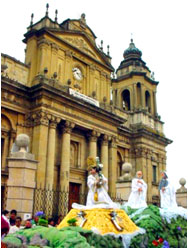</p>
                  <p align="left" class="texto"><strong>8am  Dialy -Antigua </strong></p>
                  <p align="justify" class="texto"> In the morning we will visit the most interesting towns around Antigua; San Antonio Aguas Calientes and Ciudad Vieja.<br>
                      <br>
                    We also visit a coffee and a macadamia Plantation.     In the afternoon we visit the most interesting churches and buildings in Antigua like City Hall, La Merced, the San        Francisco el Grande church, the cathedral and the Capuchinas cloister. You can have lunch in Antigua. </p>
                  <p align="center" class="texto">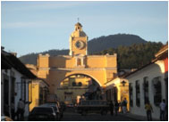</p>
                  <p align="center" class="texto">&nbsp;</p>
                  <p align="center" class="texto"></p>
                  <p align="justify" class="texto"><a href="http://www.casacarmelguatemala.com/tours.html#2"> Guatemala City</a><br>
                      <a href="http://www.casacarmelguatemala.com/tours.html#3">Antigua Guatemala</a><br>
                      <a href="http://www.casacarmelguatemala.com/tours.html#9">Antigua and Iximche </a><br>
                      <a href="http://www.casacarmelguatemala.com/tours.html#4">Lake Atitlan and Panajachel</a><br>
                      <a href="http://www.casacarmelguatemala.com/tours.html#5">Chichicastenango and Panajachel</a><br>
                      <a href="http://www.casacarmelguatemala.com/tours.html#6">Pacaya Volcano Tour</a><br>
                      <a href="http://www.casacarmelguatemala.com/tours.html#7">Tikal one and two days Tour</a><br>
                      <a href="http://www.casacarmelguatemala.com/tours.html#8">Nature of Coban</a><br>
                    <a href="http://www.casacarmelguatemala.com/tours.html#10">Rafting on the River Cahabon</a></p>
                  <div align="center"></div>
                  <div align="justify">
                    <p class="texto"><strong>GUATEMALA CITY<a name="2"></a></strong></p>
                    <p class="texto">09:00 AM: Visit to the Palacio Nacional, Metropolitan Cathedral, Centro Cívico and residential zone. Visit to two important museums (Ixchel and The Archeology museum). </p>
                    <p class="texto">01:00 PM: Lunch in a typical restaurant in Guatemala.</p>
                    <p class="texto"> 02:00 PM: Visit to Kaminal Juyu. When finished, Coffee tour in Casablanca. </p>
                    <p class="texto">05:00 PM: Transfer back to Guatemala City. Includes: Private transfers, specialized guide in your language, all entrances and taxes.</p>
                    <p class="texto">Lunch not included.<br>
                    </p>
                    <p align="center" class="texto">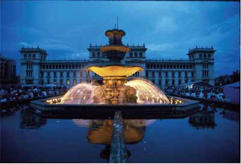</p>
                    <p align="center" class="texto">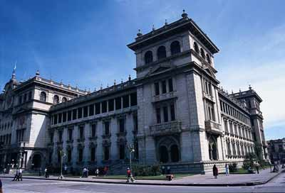<br>
                        <br>
                    </p>
                    <p class="texto"><strong>ANTIGUA 1 DAY<a name="3"></a></strong><br>
                        <br>
                      8:00AM: Transfer from Guatemala City to Antigua.</p>
                    <p class="texto"> 09:00AM: Visit to “Cerro de la Cruz”. Transfer Center of the colonial city. 
                      Visit to the most important and significant attractions of the city including 
                      Antigua’s most beautiful churches, monasteries, convents, and cultural center<br>
                      in the city.<br>
                      <br>
                      01:00PM: Time to have lunch in one of the various and exquisite restaurants
                      of the city (not included).<br>
                      <br>
                      02:15PM: Visit to Aguascalientes.<br>
                      <br>
                      05:00PM: Transfers back to your Hotel in Antigua or Guatemala City.<br>
                      <br>
                      Includes: Private transfers, specialized guide in your language, all entrances<br>
                      and taxes.</p>
                    <p align="center" class="texto">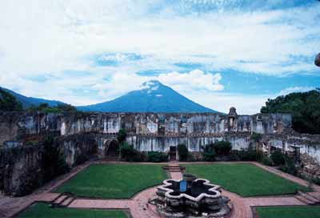</p>
                    <p align="center" class="texto"> Antigua Guatemala<br>
                    </p>
                    <p class="texto"><strong>ANTIGUA AND IXIMCHE</strong><a name="9"></a><br>
                        <br>
                      8:00AM: We will transfer you from your Hotel to Iximche Archaeological 
                      Site.<br>
                      <br>
                      11:00AM: When finish transfer to the Center of the colonial city. Visit to the 
                      most important and significant attractions of the city including Antigua’s most 
                      beautiful churches, monasteries, convents, and cultural center in the city.<br>
                      <br>
                      01:00PM: Time to have lunch in one of the various and exquisite restaurants 
                      of the city (not included).<br>
                      <br>
                      02:15PM: Visit to “Cerro de la Cruz”.<br>
                      <br>
                      05:00PM: Transfers back to your Hotel in Antigua or Guatemala City.
                      Includes: Private transfers, specialized guide in your language, all entrances 
                      and taxes.</p>
                    <p align="center" class="texto">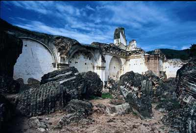</p>
                    <p class="texto"><strong>Lake Atitlan And Panajachel<a name="4"></a></strong><br>
                        <br>
                      Arguably the most beautiful lake in the world, Atitlan owes its grandeur to its 
                      enormous size and spectacular, volcanic setting. Lake Atitlan was formed 
                      when a volcanic caldera depleted of its magma. Three stately volcanoes,<br>
                      Atitlan, Toliman and San Pedro rise gracefully from its southern shore, their 
                      perfect cones reflected in the azure mirror of the lake. Weaving made and 
                      worn by the Maya-Tzutujil and Cakchiquel women who live around the lake<br>
                      are some of the most beautiful in Guatemala, and many of the men also wear 
                      traditional, hand-woven clothing.<br>
                      <br>
                      07:30AM: Transfer from your Hotel in Guatemala City or Antigua to the 
                      Maya town of Panajachel.<br>
                      <br>
                      10:00AM: Take a private boat in Lake Atitlan visiting the Maya villages of 
                      Santiago and San Antonio.<br>
                      <br>
                      13:00PM: Time to have lunch in one of the various and exquisite restaurants 
                      of the town (not included).<br>
                      <br>
                      14:15PM: Visit to the Maya town of Panajachel, visiting the Santander Street 
                      and the main attractions of this beautiful town.<br>
                      <br>
                      16:00PM: Transfers back to Guatemala City or Antigua. </p>
                    <p class="texto"> Includes: Private transfers, private boat, specialized guide (English),<br>
                      all entrances and taxes.</p>
                    <p align="center" class="texto">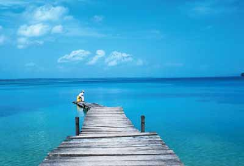</p>
                    <p align="center" class="texto">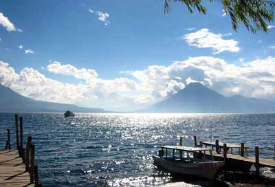<br>
                    </p>
                    <p class="texto"><strong>CHICHICASTENANGO Y PANAJACHEL<a name="5"></a></strong><br>
                        <br>
                      07:00 AM: Transfer from your Hotel in Guatemala City or Antigua to Chichicastenango. <br>
                      <br>
                      10:30 AM: Arrival to Chichicastenango’s Market. One hour will be provided to enjoy, recreate and do some shopping of the typical souvenirs. 11:30 AM: Visit to one of the most important Churches of Guatemala. <br>
                      <br>
                      12:30 PM: Time to have lunch in one of the various and exquisite’s restaurants of the town (not included) <br>
                      <br>
                      02:30 PM Arrival in Panajachel: Visit to the Maya town of Panajachel, visiting the Santander Street and the main attractions of this beautiful town. 04:00PM: Transfers back to Guatemala City or Antigua. Includes: Private transfers, specialized guide in your language, all entrances and taxes. <br>
                      <br>
                      NOTE: VISITS TO THE MARKET HAVE TO BE ON THURSDAY OR SUNDAY, OTHERWISE IT WILL BE CLOSED.</p>
                    <p align="center" class="texto">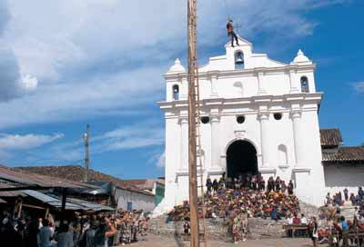</p>
                    <p align="center" class="texto">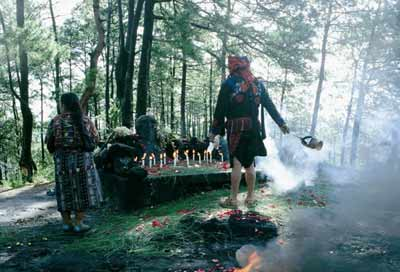</p>
                    <p align="center" class="texto"> CHICHICASTENANGO<br>
                    </p>
                    <p class="texto"><strong>PACAYA VOLCANO TOUR<a name="6"></a></strong><br>
                        <br>
                      It’s the most active volcano, it’s 2500 MTS above the sea, the environment is 
                      formed by humid forest and rocks, has impressive views of the lagoon of 
                      Calderas and other three volcanoes: Water, Fire and Acatenango. It is readily 
                      accessible and you don't need to be in good shape to climb it. You will visit 
                      the border of the base of the main cone. It is a complete adventure in only 
                      one day. Walk of ascent 2 hrs.<br>
                    </p>
                    <p class="texto">Itinerary<br>
                      • Transport form your hotel<br>
                      • Arrive to San Francisco<br>
                      • Beginning of Walk of Ascent<br>
                      • Arrive to watcher of the lagoon of Calderas<br>
                      • Stop at the watcher, with a view to the volcanoes: Water, Fire and 
                      Acatenango.<br>
                      • Walk to the base of the main cone<br>
                      • Rest for a half hour<br>
                      • Descent walk<br>
                      • Arrive to San Francisco<br>
                      • Transport to your hotel<br>
                      <br>
                      Includes:<br>
                      Transfers, all transportation by microbus, qualified bilingual guide, all 
                      entrances and fees.</p>
                    <p align="center" class="texto">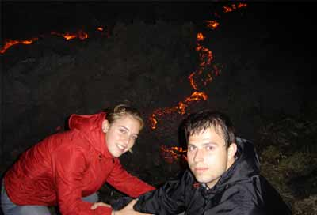<br>
                        <br>
                        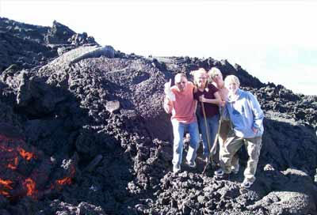<br>
                    </p>
                    <p class="texto"> <strong>TIKAL 1 Day<a name="7"></a></strong><br>
                        <br>
                      Discover the heart of the Maya World just 30 minutes away from Guatemala City by plane. On the tour you will learn about Maya civilization and its history. You will learn who where the rulers of Tikal and the construction of the city, the mysterious downfall of the city, and information on the flora and fauna of the region. You will visit the Temple of the Jaguar, Great Plaza, Lost World and then scale Temple IV to look out over the jungle and the rest of the site. The tour will take most of the day and will include a break for lunch in the park.</p>
                    <p class="texto"> The package includes:<br>
                      • Flight ticket Guatemala-Flores-Guatemala via Inter of TACA (all taxes included), welcome in the airport of Santa Elena <br>
                      • Transfers Airport - Tikal Park - Airport in exclusive bus for tourism<br>
                      • Entrance to the park and museum of Tikal<br>
                      • Bilingual guide service <br>
                      • Lunch in restaurant within the park (drink not included)</p>
                    <p class="texto"> ITINERARY: <br>
                      • Transfer from your hotel to the airport to take flight to Tikal.<br>
                      • Upon arrival transfer to the archaeological site of Tikal. Visit to Tikal.<br>
                      • Transfer back to the airport in Flores, Petén to take flight back to Guatemala City. Upon arrival transfer from the airport to the hotel</p>
                    <p align="center" class="texto">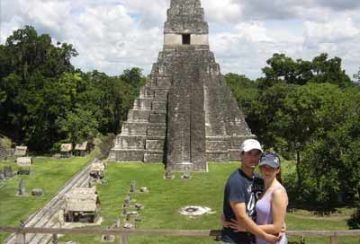</p>
                    <p align="left" class="texto"><strong>TIKAL 2 DAYS </strong></p>
                    <p class="texto">Discover the heart of the Maya World just 30 minutes away from Guatemala City by plane. On the tour you will learn about Maya civilization and its history. You will learn who where the rulers of Tikal and the construction of the city, the mysterious downfall of the city, and information on the flora and fauna of the region. You will visit the Temple of the Jaguar, Great Plaza, Lost World and then scale Temple IV to look out over the jungle and the rest of the site. The tour will take most of the day and will include a break for lunch in the park. </p>
                    <p class="texto">Day #1 Transfer from your hotel to the airport to take flight to Tikal. Upon arrival transfer to Tikal. Visit to Tikal. Lodging in “Flores” or “El Remate”. </p>
                    <p class="texto">Day#2 FREE DAY. Transfer back to the airport. The package includes: <br>
                      • Flight ticket Guatemala-Flores-Guatemala via Inter of TACA (all taxes included) <br>
                      • Welcome in the airport of Santa Elena <br>
                      • Transfers Airport - Tikal Park - Airport in exclusive bus for tourism <br>
                      • Entrance to the park and museum of Tikal<br>
                      • Bilingual guide service <br>
                      • Lunch in restaurant within the park (drink not included) <br>
                      • Lodging in luxury hotel in Flores or El Remate</p>
                    <p align="center" class="texto">.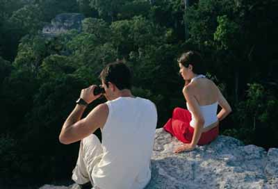</p>
                    <p class="texto"><strong><br>
                      NATURE OF COBAN - 3 DAYS<a name="8"></a></strong></p>
                    <p class="texto">Day #1 <br>
                      •  Departure from Guatemala City to Coban. Visit to the Biotopo del Quetzal. <br>
                      • Transfer back to the hotel. Lodging in Coban. <br>
                      <br>
                      Day #2 <br>
                      • Visit to Semuc Champey and Lankin Caves <br>
                      • Loding in Coban. <br>
                      <br>
                      Day #3<br>
                      • Visit to Rey Marco´s Caves.<br>
                      • Transfer back to Guatemala City. <br>
                      Includes: Transfers, all transportation by microbus, lodging in hotel, qualified bilingual guide and all breakfasts.</p>
                    <p align="center">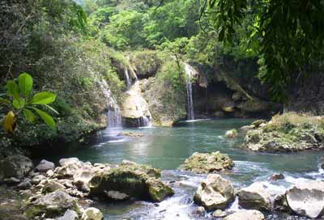</p>
                    <p align="center">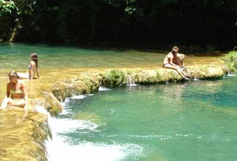</p>
                    <p align="justify" class="texto">RAFTING ON THE RIVER CAHABON (3 DAYS) <a name="10" id="10"></a></p>
                    <p align="justify" class="texto">DAY 1 GUATEMALA / COBAN We will meet you at the hotel at 3:00 p.m. for departure to Cobán. Dinner (on your own) at the hotel. Meeting with guides to listen what adventures lay ahead during the next two days. </p>
                    <p align="justify" class="texto">DAY 2 COBAN / LANQUIN / RIO CAHABON Early breakfast at 7:00 a.m. Departure to Lanquín, and then walk to the banks of the Lanquín River. After a safety and orientation talk, we board the rafts and begin descending the Lanquín river. The trip gets more exciting when this river joins the Rio Cahabón. Continuing on the Cahabón; we navigate some of the river’s largest and most difficult rapids. The day is full of excitement, a perfect combination of rapids, tranquil pools, friendly Maya-keck’chi natives and wild life. Enjoy the subtropical jungle with large variety of orchids and bromeliads blooming throughout the year. Marvel at the local Monctezuma Oropendula, Blue belted &amp; Amazon Kingfishers, Amazon Parrots or a glimpse of the Keelbilled Toucan. In the afternoon we arrive at the small village of Tamax, our take-out, where we transfer to awaiting four-wheel drive vehicle for a ride back to Lanquín. Dinner (on your own), overnight at the hotel El Recreo. For those who feel energetic, one can visit the caves of Lanquín where the bluish Green River spills forth through one of the cave’s openings. At dusk, one can observe the spectacular exodus of thousands of bats that fly on their nightly hunts. </p>
                    <p align="justify" class="texto">DAY 3 SEMUC CHAMPEY / COBAN / GUATEMALA. Sunrise departure to view the incredible beautiful travertine pools of Semuc Champey, where the Cahabón River runs underneath. The pools are lying on top of a natural limestone bridge formed by deposits of minerals carried by creeks descending down the cliffs of the canyon. Your expert guide will guide you to where the river disappears beneath the earth. Breakfast at the site. Morning free to swim and relax in this special natural paradise. At mid-day we return to Cobán for lunch and continue to Guatemala. Includes: All transportation by microbus, rafting (Lunch at Cahabon River), hotel, all the equipment and qualified bilingual guide.</p>
                    <p align="center" class="texto">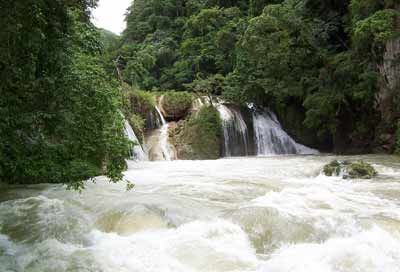</p>
                  </div>
                  <div align="justify"></div>
                  <p align="justify" class="titulo">&nbsp;</p>                </td>
              </tr>
            </tbody></table>
			<p></p></td>
  </tr>
	<tr>
		<td>
			</td>
		<td>
			</td>
		<td>
			</td>
		<td>
			</td>
		<td>
			</td>
		<td>
			</td>
		<td>
			</td>
		<td>
			</td>
	</tr>
</tbody></table>
<!-- End ImageReady Slices -->

<map name="Map"><area shape="rect" coords="77,7,154,22" href="http://www.casacarmelguatemala.com/homepageespanol.html">
</map>
<map name="Map2"><area shape="rect" coords="265,16,451,35" href="mailto:info@casacarmelguatemala.com">
</map>
</body></html>